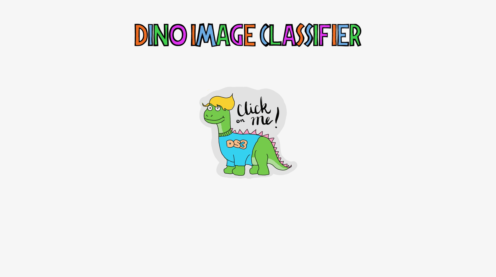

Email Summarizer
Overview
I was constantly faced with the problem of missing important emails and having to parse through emails at the begginign of the day.
I built an email summarizer to save me time. It reads emails from multiple accounts, and uses NLP
to summarize them.
Technical Implementation
The Project uses the Google API to access emails from GMail, and Python with the OpenAI API to summarize them. The project
is run via a react frontend that is connected to a Node.js backend.
Key Features
- Multi-account email integration
- Natural Language Processing for summarization
- Automated email processing
Results & Impact
I use this project every day to stay on top of my emails and get a quick summary of important emails each morning. The next steps
of the project are to make it a service available to all users.
Sharp Healthcare AI Voice Assistant
Overview
I built an AI voice assistant using OpenAI's Realtime API with prompt engineering and RAG to
aid users in the Sharp Healthcare app who had trouble navigating the app. The AI assistant would be able
to schedule appointments, check prescriptions, and more.
Technical Implementation
The project uses a Node.js back end with the OpenAI Realtime API and the Twilio API to allow realtime conversation
between the user and the AI assistant. Prompt engineering and RAG were used to make the AI
specialised to being a healthcare assistant.
Key Features
- Real-time voice processing
- Natural language understanding
- Healthcare-specific functionality
Results & Impact
This project was presented to Sharp Healthcare to demonstrate the functionality of the AI voice assistant and how it
could benefit those who can not navigate the Sharp Healthcare app.
AI-Powered Supermarket Deal Finder
Overview
Created an automated system that helps users find the best supermarket deals by combining web scraping,
computer vision, and natural language processing technologies.
Technical Implementation
- Built a robust web scraper using Selenium and BeautifulSoup to collect supermarket ad images
- Integrated Meta's Segment Anything Model for image processing and ChatGPT API for text extraction
- Developed a data pipeline using Pandas to organize and analyze product information
- Created an intuitive Streamlit interface for user interaction
Key Features
- Automated price and product name extraction from ad images
- Real-time deal comparison across multiple supermarkets
- User-friendly search interface
- Efficient data storage and retrieval system
Impact
- Helps users save money by finding the best deals
Ensemble CNN Image Classifier

Overview
Developed a sophisticated image classification system using an ensemble of Convolutional Neural Networks,
featuring real-time classification capabilities through a React-based frontend.
Key Features
- Advanced image preprocessing pipeline using PIL
- Dynamic image resizing and normalization
- RESTful API integration
- Real-time classification interface
Tripadvisor Sentiment Analysis

Overview
Built a sophisticated sentiment analysis system for Tripadvisor reviews using advanced NLP techniques
and deep learning, achieving a 60% improvement in prediction accuracy.
Key Features
- Advanced tokenization and data cleaning
- Neural network-based rating classification
- Responsive Flask frontend
- Real-time user interaction